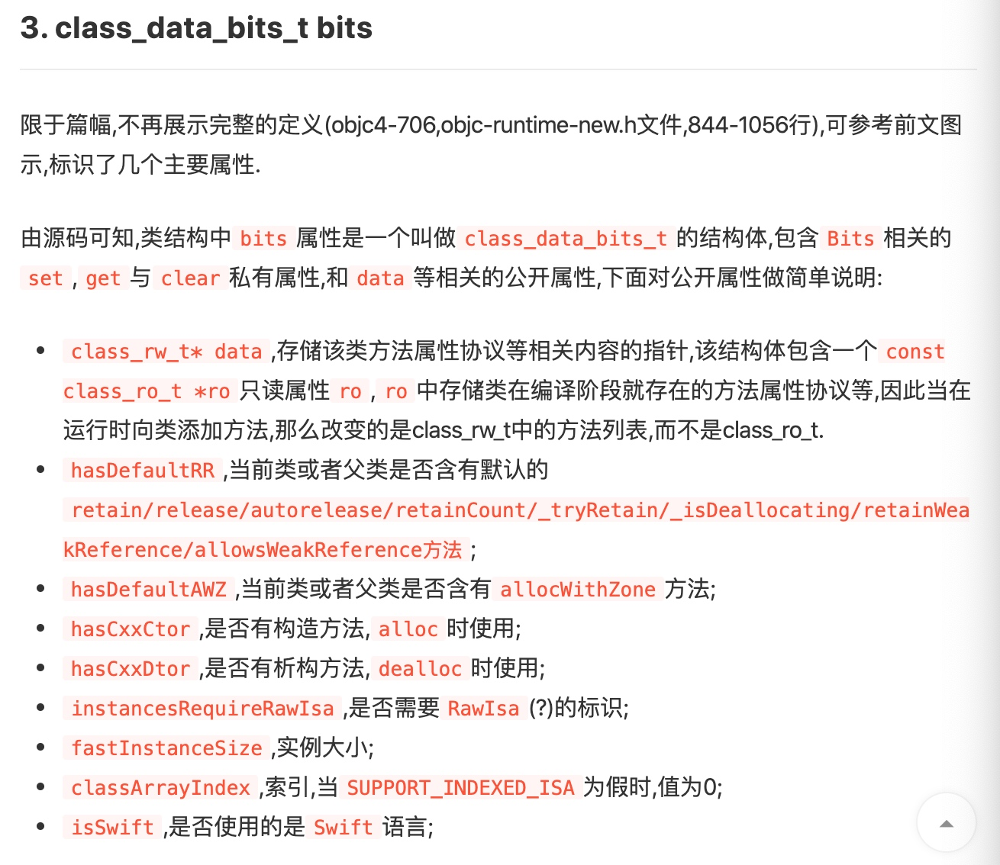
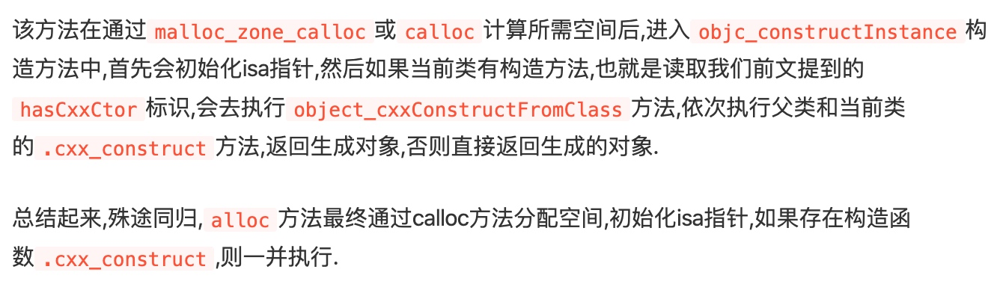

对象从创建到销毁过程的探究
NSObject
先看下NSObject的内存结构

实例对象的 isa 指针指向 class(类对象),根据 runtime源码我们可以看到 objc_class 是继承自 objc_object 的,本质上,类是一个对象,所以我们才会常说"类对象"
objc_object 有一个唯一的私有变量-isa_t 类型的 isa
objc_class 的定义还包括了:
- Class superclass -指向父类
- cathe_t cathe 方法缓存
- class_data_bits_t bits -存储类方法,属性,协议等数据
isa_t isa
isa又包括哪些东西?
union isa_t
{
isa_t() { }
isa_t(uintptr_t value) : bits(value) { }
Class cls;
uintptr_t bits;
# if __arm64__
# define ISA_MASK 0x0000000ffffffff8ULL
# define ISA_MAGIC_MASK 0x000003f000000001ULL
# define ISA_MAGIC_VALUE 0x000001a000000001ULL
struct {
uintptr_t nonpointer : 1;
uintptr_t has_assoc : 1;//对象含有或者曾经含有关联引用，没有关联引用的可以更快地释放内存
uintptr_t has_cxx_dtor : 1;//析构器方法,如果没有析构器就会快速释放内存
uintptr_t shiftcls : 33; // MACH_VM_MAX_ADDRESS 0x1000000000
uintptr_t magic : 6;//用于调试器判断当前对象是真的对象还是没有初始化的空间
uintptr_t weakly_referenced : 1;//对象被指向或者曾经指向一个 ARC 的弱变量，没有弱引用的对象可以更快释放
uintptr_t deallocating : 1;//对象正在释放内存
uintptr_t has_sidetable_rc : 1;//对象的引用计数太大了，存不下
uintptr_t extra_rc : 19;//对象的引用计数超过 1，会存在这个这个里面
# define RC_ONE (1ULL<<45)
# define RC_HALF (1ULL<<18)
};
# elif __x86_64__
# define ISA_MASK 0x00007ffffffffff8ULL
# define ISA_MAGIC_MASK 0x001f800000000001ULL
# define ISA_MAGIC_VALUE 0x001d800000000001ULL
struct {
uintptr_t nonpointer : 1;
uintptr_t has_assoc : 1;
uintptr_t has_cxx_dtor : 1;
uintptr_t shiftcls : 44; // MACH_VM_MAX_ADDRESS 0x7fffffe00000
uintptr_t magic : 6;
uintptr_t weakly_referenced : 1;
uintptr_t deallocating : 1;
uintptr_t has_sidetable_rc : 1;
uintptr_t extra_rc : 8;
# define RC_ONE (1ULL<<56)
# define RC_HALF (1ULL<<7)
};
# else
# error unknown architecture for packed isa
# endif
// SUPPORT_PACKED_ISA
#endif
#if SUPPORT_INDEXED_ISA
# if __ARM_ARCH_7K__ >= 2
# define ISA_INDEX_IS_NPI 1
# define ISA_INDEX_MASK 0x0001FFFC
# define ISA_INDEX_SHIFT 2
# define ISA_INDEX_BITS 15
# define ISA_INDEX_COUNT (1 << ISA_INDEX_BITS)
# define ISA_INDEX_MAGIC_MASK 0x001E0001
# define ISA_INDEX_MAGIC_VALUE 0x001C0001
struct {
uintptr_t nonpointer : 1;
uintptr_t has_assoc : 1;
uintptr_t indexcls : 15;
uintptr_t magic : 4;
uintptr_t has_cxx_dtor : 1;
uintptr_t weakly_referenced : 1;
uintptr_t deallocating : 1;
uintptr_t has_sidetable_rc : 1;
uintptr_t extra_rc : 7;
# define RC_ONE (1ULL<<25)
# define RC_HALF (1ULL<<6)
};
# else
# error unknown architecture for indexed isa
# endif
// SUPPORT_INDEXED_ISA
#endif
};


alloc
alloc流程简化图

alloc 方法包含了非常多的流程和判断,这里做了简化,当我们写一个[Class alloc]的时候,会调用 objc_alloc(Class cls)方法,进而执行 callAlloc方法,最终执行_class_createInstanceFromZone方法:


malloc
在 iOS 进程地址空间的各个区域中,最灵活的就是堆区,它为进程动态分配内存.
从苹果公开的malloc源码上来看，malloc的原理大致如下：
malloc内存分配基于malloc zone，并将内存分配按大小分为nano、tiny、small、large几种类型，申请时按需进行最适分配
malloc在首次调用时，初始化default zone，在64位情况下，会初始化default zone为nano zone，同时初始化一个scalable zone作为helper zone，nano zone负责nano大小的分配，scalable zone则负责tiny、small和large内存的分配
每次malloc时，根据传入的size参数，优先交给nano zone做分配处理，如果大小不在nano范围，则转交给helper zone处理。

参考:
https://juejin.im/entry/58a178060ce463005644ee4a
https://yq.aliyun.com/articles/3065